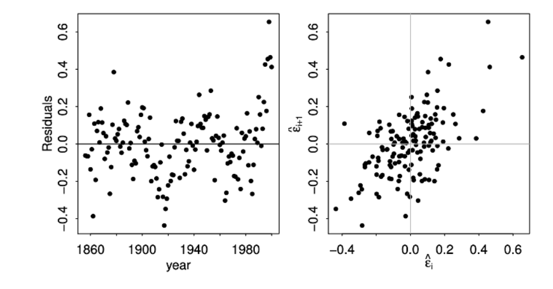
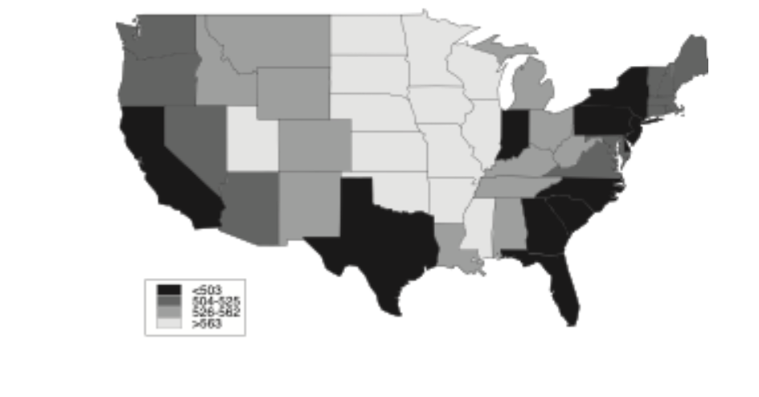
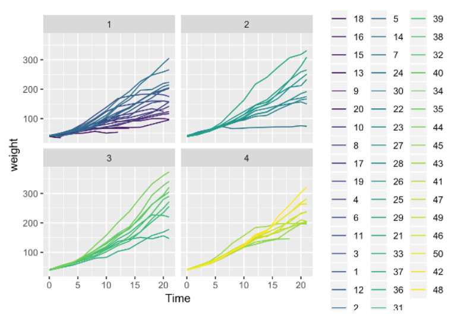
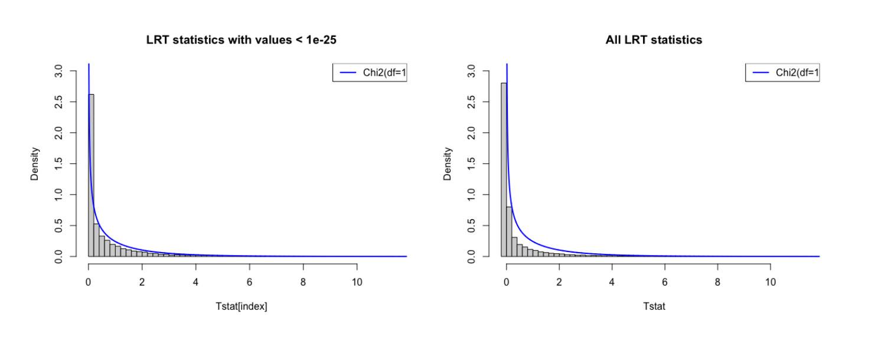
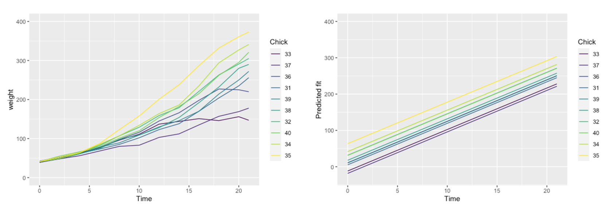
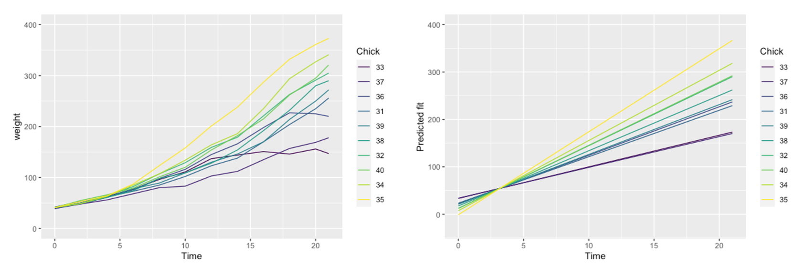
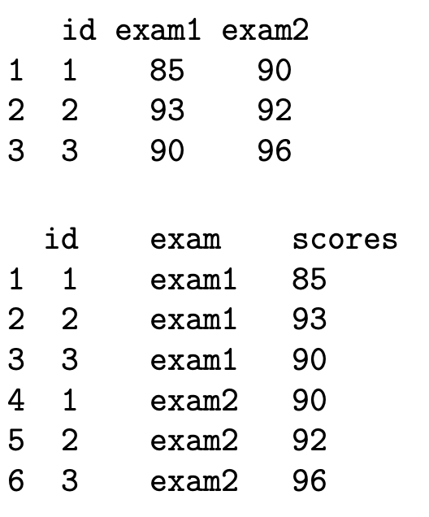
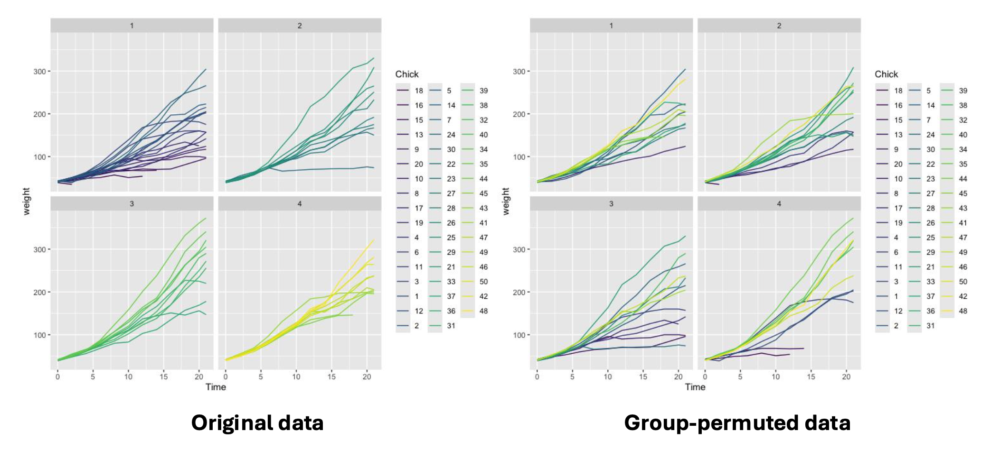

Week 10



\[ \operatorname{Cov}(\epsilon_i,\epsilon_j)=\operatorname{Cov}(\epsilon_j,\epsilon_i)=0\quad\text{for all subjects }i\text{ and }j \]
\[ \operatorname{Cov}\begin{pmatrix}\epsilon_1\\\epsilon_2\\\vdots\\\epsilon_n\end{pmatrix}=\begin{bmatrix}\operatorname{Var}(\epsilon_1)&\operatorname{Cov}(\epsilon_1,\epsilon_2)&\cdots&\operatorname{Cov}(\epsilon_1,\epsilon_n)\\\operatorname{Cov}(\epsilon_2,\epsilon_1)&\operatorname{Var}(\epsilon_2)&\cdots&\operatorname{Cov}(\epsilon_2,\epsilon_n)\\\vdots&\vdots&\ddots&\vdots\\\operatorname{Cov}(\epsilon_n,\epsilon_1)&\operatorname{Cov}(\epsilon_n,\epsilon_2)&\cdots&\operatorname{Var}(\epsilon_n)\end{bmatrix} \]
\[ \operatorname{Cov}\begin{pmatrix}\epsilon_1\\\epsilon_2\\\vdots\\\epsilon_n\end{pmatrix}=\begin{bmatrix}\operatorname{Var}(\epsilon_1)&\operatorname{Cov}(\epsilon_1,\epsilon_2)&\cdots&\operatorname{Cov}(\epsilon_1,\epsilon_n)\\\operatorname{Cov}(\epsilon_2,\epsilon_1)&\operatorname{Var}(\epsilon_2)&\cdots&\operatorname{Cov}(\epsilon_2,\epsilon_n)\\\vdots&\vdots&\ddots&\vdots\\\operatorname{Cov}(\epsilon_n,\epsilon_1)&\operatorname{Cov}(\epsilon_n,\epsilon_2)&\cdots&\operatorname{Var}(\epsilon_n)\end{bmatrix} \]
\[ \operatorname{Cov}\begin{pmatrix}\epsilon_1\\\epsilon_2\\\vdots\\\epsilon_n\end{pmatrix} =\begin{bmatrix}\sigma^2&\sigma^2\phi&\cdots&\sigma^2\phi\\\sigma^2\phi&\sigma^2&\cdots&\sigma^2\phi\\\vdots&\vdots&\ddots&\vdots\\\sigma^2\phi&\sigma^2\phi&\cdots&\sigma^2\end{bmatrix} \]
Compound symmetry (CS) is one of the most commonly used forms to model covariance.
\[ \operatorname{Cov}\begin{pmatrix}\epsilon_1\\\epsilon_2\\\epsilon_3\\\vdots\\\epsilon_n\end{pmatrix} =\sigma^2\begin{bmatrix}1&\phi&\phi^2&\cdots&\phi^{n-1}\\\phi&1&\phi&\cdots&\phi^{n-2}\\\phi^2&\phi&1&\cdots&\phi^{n-3}\\\vdots&\vdots&\vdots&\ddots&\vdots\\\phi^{n-1}&\phi^{n-2}&\phi^{n-3}&\cdots&1\end{bmatrix} \]
AR(1) correlation structure (when \(|\phi|<1\)) is best motivated to model structured dependencies over time (i.e. time series).
\(\operatorname{Cor}(\epsilon_i,\epsilon_j)=\phi^{|i-j|}\) decreases as \(|i-j|\) increases.
\[ \epsilon_i\overset{\mathrm{i.i.d.}}{\sim}N(0,\sigma^2),\quad y_0=\epsilon_0,\quad y_1=\phi y_0+\epsilon_1,\quad y_2=\phi y_1+\epsilon_2,\quad\ldots,\quad y_n=\phi y_{n-1}+\epsilon_n \]
\[ \begin{aligned}\operatorname{Cov}(y_1,y_2)&=\operatorname{Cov}(y_1,\phi y_1+\epsilon_2)=\operatorname{Cov}(y_1,\phi y_1)+\operatorname{Cov}(y_1,\epsilon_2)\\&=\phi\operatorname{Cov}(y_1,y_1)+0=\sigma^2\phi\\\operatorname{Cov}(y_1,y_3)&=\operatorname{Cov}(y_1,\phi y_2+\epsilon_3)=\operatorname{Cov}(y_1,\phi y_2)+\operatorname{Cov}(y_1,\epsilon_3)\\&=\phi\operatorname{Cov}(y_1,y_2)+0=\sigma^2\phi^2\end{aligned} \]
\[ \operatorname{Cov}\begin{pmatrix}\epsilon_1\\\epsilon_2\\\vdots\\\epsilon_n\end{pmatrix}= \sigma^2\begin{bmatrix}1&\phi_{1,2}&\cdots&\phi_{1,n}\\\phi_{1,2}&1&\cdots&\phi_{2,n}\\\vdots&\vdots&\ddots&\vdots\\\phi_{1,n}&\phi_{2,n}&\cdots&1\end{bmatrix} \]
\[ \mathbf{y}=\mathbf{X}\boldsymbol{\beta}+\boldsymbol{\epsilon}, \quad\text{where}\quad E(\boldsymbol{\epsilon})=\mathbf{0}_n \quad\text{and}\quad \operatorname{Cov}(\boldsymbol{\epsilon})=\Sigma \]
\[ \begin{aligned} E[(\mathbf{X}^T\mathbf{X})^{-1}\mathbf{X}^T\mathbf{y}] &=(\mathbf{X}^T\mathbf{X})^{-1}\mathbf{X}^TE[\mathbf{y}]\\ &=(\mathbf{X}^T\mathbf{X})^{-1}\mathbf{X}^T\mathbf{X}\boldsymbol{\beta}\\ &=\boldsymbol{\beta}\\[6pt] \operatorname{Cov}((\mathbf{X}^T\mathbf{X})^{-1}\mathbf{X}^T\mathbf{y}) &=(\mathbf{X}^T\mathbf{X})^{-1}\mathbf{X}^T\operatorname{Cov}(\mathbf{y})\mathbf{X}(\mathbf{X}^T\mathbf{X})^{-1}\\ &=(\mathbf{X}^T\mathbf{X})^{-1}\mathbf{X}^T\Sigma\mathbf{X}(\mathbf{X}^T\mathbf{X})^{-1} \end{aligned} \]
Is there a way we can transform the data so that the errors are no longer correlated and the OLS estimator can be BLUE?
Results from the singular value decomposition: There is \(\mathbf{U}\) and \(\mathbf{D}\) matrix that \(\mathbf{\Sigma}=\mathbf{UDU}^T\) where
In other words, the columns of \(U\) are orthonormal (orthogonal + unit length)
\[ \begin{aligned} \operatorname{Cov}(\mathbf{D}^{-1/2}\mathbf{U}^T\mathbf{y}) &= \mathbf{D}^{-1/2}\mathbf{U}^T \mathbf{U}\mathbf{D}\mathbf{U}^T \mathbf{U}\mathbf{D}^{-1/2} \\ &= \mathbf{D}^{-1/2}\mathbf{D}\mathbf{D}^{-1/2} \\ &= \mathbf{I}. \end{aligned} \]
\[ \mathbf{y}=\mathbf{X}\boldsymbol{\beta}+\boldsymbol{\epsilon} \quad\Longrightarrow\quad \mathbf{D}^{-1/2}\mathbf{U}^T\mathbf{y} = \underbrace{\mathbf{D}^{-1/2}\mathbf{U}^T\mathbf{X}}_{\mathbf{X}^\star}\boldsymbol{\beta} + \underbrace{\mathbf{D}^{-1/2}\mathbf{U}^T\boldsymbol{\epsilon}}_{\boldsymbol{\epsilon}^\star} \]
\[ \begin{aligned} \hat{\boldsymbol{\beta}}_{\mathrm{GLS}} &=(\mathbf{X}^{\star T}\mathbf{X}^\star)^{-1} \mathbf{X}^{\star T}\mathbf{y}^\star\\ &=(\mathbf{X}^T\mathbf{U}\mathbf{D}^{-1/2}\mathbf{D}^{-1/2}\mathbf{U}^T\mathbf{X})^{-1} \mathbf{X}^T\mathbf{U}\mathbf{D}^{-1/2}\mathbf{D}^{-1/2}\mathbf{U}^T\mathbf{y}\\ &=(\mathbf{X}^T\boldsymbol{\Sigma}^{-1}\mathbf{X})^{-1} \mathbf{X}^T\boldsymbol{\Sigma}^{-1}\mathbf{y} \end{aligned} \]
\[ \begin{aligned} E[\hat{\boldsymbol{\beta}}_{\mathrm{GLS}}] &=(\mathbf{X}^T\boldsymbol{\Sigma}^{-1}\mathbf{X})^{-1} \mathbf{X}^T\boldsymbol{\Sigma}^{-1}E[\mathbf{y}]\\ &=(\mathbf{X}^T\boldsymbol{\Sigma}^{-1}\mathbf{X})^{-1} \mathbf{X}^T\boldsymbol{\Sigma}^{-1}\mathbf{X}\boldsymbol{\beta}\\ &=\boldsymbol{\beta} \end{aligned} \]
\[ \begin{aligned} \operatorname{Cov}(\hat{\boldsymbol{\beta}}_{\mathrm{GLS}}) &=(\mathbf{X}^T\boldsymbol{\Sigma}^{-1}\mathbf{X})^{-1} \mathbf{X}^T\boldsymbol{\Sigma}^{-1} \operatorname{Cov}(\mathbf{y}) \boldsymbol{\Sigma}^{-1}\mathbf{X} (\mathbf{X}^T\boldsymbol{\Sigma}^{-1}\mathbf{X})^{-1}\\ &=(\mathbf{X}^T\boldsymbol{\Sigma}^{-1}\mathbf{X})^{-1} \end{aligned} \]
\[ \mathbf{\hat\beta}_{\mathrm{FGLS}}=(\mathbf{X^T\hat\Sigma}^{-1}\mathbf{X})^{-1}\mathbf{X}^T\mathbf{\hat\Sigma^{-1}y} \]
Example 1: One Way Mixed Effects ANOVA
\[ y_{ij}=\mu+\alpha_i+\epsilon_{ij}\qquad\text{where}\quad\epsilon_{ij}\sim N(0,\sigma^2) \]
where \(y_{ij}\) is the sodium content, \(i = 1, . . . , 8\) is the index for beer brands, and \(j = 1, . . . , 6\) is the index for beer bottles.
Example 1: One Way Mixed Effects ANOVA
\[ y_{ij}=\mu+\alpha_i+\epsilon_{ij}\qquad\text{where}\quad\epsilon_{ij}\overset{\mathrm{i.i.d.}}{\sim}N(0,\sigma^2) \]
Example 1: One Way Mixed Effects ANOVA
\[ \begin{aligned}\operatorname{Var}(y_{ij})&=\operatorname{Var}(\alpha_i+\epsilon_{ij})=\operatorname{Var}(\alpha_i)+\operatorname{Var}(\epsilon_{ij})=\tau^2+\sigma^2\\\operatorname{Cov}(y_{ij},y_{ik})&=\operatorname{Cov}(\alpha_i+\epsilon_{ij},\alpha_i+\epsilon_{ik})\\&=\operatorname{Cov}(\alpha_i,\alpha_i)+\operatorname{Cov}(\alpha_i,\epsilon_{ik})+\operatorname{Cov}(\epsilon_{ij},\alpha_i)+\operatorname{Cov}(\epsilon_{ij},\epsilon_{ik})\\&=\operatorname{Var}(\alpha_i)+0+0+0=\tau^2\\\operatorname{Cor}(y_{ij},y_{ik})&=\frac{\operatorname{Cov}(y_{ij},y_{ik})}{\sqrt{\operatorname{Var}(y_{ij})\operatorname{Var}(y_{ik})}}=\frac{\tau^2}{\tau^2+\sigma^2}>0\end{aligned} \]
Example 1: One Way Mixed Effects ANOVA
The covariance matrix has the following block structure:
\[ \operatorname{Cov}(\mathbf y)= \begin{pmatrix} \mathbf\Sigma_6 & \mathbf 0 & \cdots & \mathbf 0\\ \mathbf 0 & \mathbf\Sigma_6 & \cdots & \mathbf 0\\ \vdots & \vdots & \ddots & \vdots\\ \mathbf 0 & \mathbf 0 & \cdots & \mathbf\Sigma_6 \end{pmatrix} \]
where
\[ \mathbf\Sigma_6= \begin{pmatrix} \tau^2+\sigma^2 & \tau^2 & \cdots & \tau^2\\ \tau^2 & \tau^2+\sigma^2 & \cdots & \tau^2\\ \vdots & \vdots & \ddots & \vdots\\ \tau^2 & \tau^2 & \cdots & \tau^2+\sigma^2 \end{pmatrix}. \]
Example 2: Heritability
\(^1\) that is, how much variability of a phenotype is explained by the genetic factor.
Example 2: Heritability
\[ \begin{pmatrix} y_{i1}\\ y_{i2} \end{pmatrix} = \mu+\alpha_i+ \begin{pmatrix} \epsilon_{i1}\\ \epsilon_{i2} \end{pmatrix} \]
where all \(\epsilon_{ij}\overset{i.i.d.}{\sim}N(0,\sigma^2)\), \(\alpha_i\overset{i.i.d.}{\sim}N(0,\tau^2)\) and \(\alpha_i\), \(\epsilon_{ij}\) are independent.
Here, our central interest is not \(\mu\). Rather, it is \(\sigma^2\) and \(\tau^2\) and see how much variability is explained by “being a twin” (e.g. “genetic factor”).
The correlation \(y\) between twins in a family would be \(\tau^2/(\tau^2+\sigma^2)\).
Example 2: Heritability
\[ y_{ij}=\underbrace{\beta_0+x_{ij}\beta_1}_{\text{some fixed effects}}+\underbrace{b_{0i}}_{\text{some random effects}}+\underbrace{\epsilon_{ij}}_{\text{noise}} \] - LMM is closely related to the Multilevel models or Hierarchical linear models
\[ \mathbf{y=X\beta+Zb+\epsilon} \]
where
\[ \mathbf{b}\sim\operatorname{MVN}(0,\mathbf{\tau^2I}) \]
It needs to be predicted after obtaining estimates of variance components.
\[ \mathbf{\epsilon}\sim\operatorname{MVN}(0,\mathbf{\sigma^2I}) \]
\[ \mathbf{y} = \mathbf{X}\mathbf{\beta} + \mathbf{Z}\mathbf{b} + \boldsymbol{\epsilon} \]
\[ E[\mathbf{y}] = \mathbf{X}\boldsymbol{\beta} + \mathbf{Z}E[\mathbf{b}] + E[\boldsymbol{\epsilon}] = \mathbf{X}\boldsymbol{\beta} \]
\[ \underbrace{\operatorname{Cov}(\mathbf{y})}_{\boldsymbol{\Sigma}} = \operatorname{Cov}(\mathbf{Z}\mathbf{b} + \boldsymbol{\epsilon}) = \tau^2\mathbf{Z}\mathbf{Z}^T + \sigma^2\mathbf{I} \]
\[ \underbrace{\begin{pmatrix}y_{1,1}\\y_{1,2}\\\vdots\\y_{1,6}\\y_{2,1}\\\vdots\\y_{2,6}\\\vdots\\y_{8,1}\\\vdots\\y_{8,6}\end{pmatrix}}_\mathbf{y} =\underbrace{\begin{pmatrix}1\\1\\\vdots\\1\\1\\\vdots\\1\\\vdots\\1\\\vdots\\1\end{pmatrix}}_\mathbf{X}\beta_0+ \underbrace{\begin{bmatrix}1&0&\cdots&0\\1&0&\cdots&0\\\vdots&\vdots&&\vdots\\1&0&\cdots&0\\0&1&\cdots&0\\\vdots&\vdots&&\vdots\\0&1&\cdots&0\\\vdots&\vdots&&\vdots\\0&0&\cdots&1\\\vdots&\vdots&&\vdots\\0&0&\cdots&1\end{bmatrix}}_\mathbf{Z} \begin{pmatrix}b_1\\b_2\\\vdots\\b_8\end{pmatrix} +\underbrace{\begin{pmatrix}\epsilon_{1,1}\\\epsilon_{1,2}\\\vdots\\\epsilon_{1,6}\\\epsilon_{2,1}\\\vdots\\\epsilon_{2,6}\\\vdots\\\epsilon_{8,1}\\\vdots\\\epsilon_{8,6}\end{pmatrix}}_\mathbf{\epsilon} \]
\[ \mathbf{y}\sim\operatorname{MVN}(\mathbf{X\beta,\Sigma})\quad\text{where}\quad\mathbf{\Sigma}=\tau^2\mathbf{ZZ}^T+\sigma^2\mathbf{I} \]
\[ L(\mathbf{\beta},\tau^2,\sigma^2\mid \mathbf{y})\propto\det(\mathbf{\Sigma})^{-1/2}\exp\left\{-\frac12(\mathbf{y-X\beta})^T\mathbf{\Sigma}^{-1}(\mathbf{y-X\beta})\right\} \] which could be maximized with the MLE solution.
\[ \mathbf{Q=I-X(X^T X)^{-1}X^T} \]
This leads to:
\[ \mathbf{Qy}\sim\operatorname{MVN}(\mathbf{QX\beta,Q\Sigma Q})\quad\Rightarrow\quad \mathbf{Qy}\sim\operatorname{MVN}(0,\tau^2\mathbf{QZZ^TQ}+\sigma^2\mathbf{Q}) \]
Then, under this restricted scenario, only \(\tau^2\) and \(\sigma^2\) could be estimated via likelihood.
Key Idea of REML is that REML separates the part of the data used for estimation of variance components from that used for estimation of \(\beta\).
Once variance components are estimated from REML, \(\beta\) can be estimated by the FGLS estimator.
Properties of REML:
\[ \begin{pmatrix}\mathbf{Zb}\\\mathbf{y}\end{pmatrix}\sim \operatorname{MVN}\left(\begin{pmatrix}0\\\mathbf{X\beta}\end{pmatrix},\begin{bmatrix}\tau^2\mathbf{ZZ}^T&\tau^2\mathbf{ZZ}^T\\\tau^2\mathbf{ZZ}^T&\tau^2\mathbf{ZZ}^T+\sigma^2\mathbf{I}\end{bmatrix}\right) \]
\[E[\mathbf{Zb\mid y}]=(\tau^2\mathbf{ZZ}^T)\mathbf{\Sigma}^{-1}(\mathbf{y-X\beta})\]
\[\mathbf{Z\hat b}=\widehat E[\mathbf{Zb\mid y}]=\hat\tau^2\mathbf{ZZ}^T\hat{\mathbf{\Sigma}}^{-1}(\mathbf{y-X\hat\beta})\]
\[ (\tau^2\mathbf{ZZ}^T)\mathbf{\Sigma}^{-1}(\mathbf{y-X\hat\beta}_{\mathrm{GLS}}) \]
is called the Best Linear Unbiased prediction (BLUP) of \(\mathbf{Zb}\).
\[ \begin{aligned} \mathbf{\hat{y}} & =\mathbf{X\hat\beta+Z\hat b}\\ &=\mathbf{X\hat\beta}+\hat\tau^2\mathbf{ZZ}^T\mathbf{\hat{\Sigma}^{-1}(y-X\hat\beta})\\ &=\underbrace{(\mathbf{I}-\hat\tau^2\mathbf{ZZ}^T\mathbf{\hat{\Sigma}}^{-1})}_{\text{weight 1}}\mathbf{X\hat\beta}+\underbrace{\hat\tau^2\mathbf{ZZ}^T\mathbf{\hat\Sigma}^{-1}}_{\text{weight 2}}\mathbf{y} \end{aligned} \]
A few observations:
\[ \mathbf{y=X\beta+Zb+\epsilon} \]
where
\[ b_1,\ldots,b_n\overset{\mathrm{i.i.d.}}{\sim}N(0,\tau^2),\quad\epsilon_{ij}\sim N(0,\sigma^2)\quad\text{and }b\text{s and }\epsilon\text{s are independent} \]
Random effects = setting a normal prior on the random effects!
\[ H_0:\mathbf{A\beta=c}\qquad\text{versus}\qquad H_1:\mathbf{A\beta\ne c} \]
\[ H_0:\tau^2=0\qquad\text{versus}\qquad H_1:\tau^2>0 \]
1. Likelihood Ratio Test
\[ T_{\mathrm{LRT}}=-2\left(\log L(\hat\Theta_{\mathrm{null}})-\log L(\hat\Theta_{\mathrm{full}})\right) \]
where \(\Theta\) is the parameter set. \(T_{LRT}\) follows \(\chi_{\text{rank}(\mathbf{A})}\) distribution asymptotically when \(H_0\) is true.
2. Wald Test
\[ T_{\mathrm{Wald}}=(\mathbf{A\hat\beta-c})^T\left\{\underbrace{\mathbf{A(X^T\hat\Sigma^{-1}X)^{-1}A}^T}_{\equiv\widehat{\operatorname{aCov}}(\mathbf{A\hat\beta})}\right\}^{-1}(\mathbf{A\hat\beta-c})\sim\chi^2_{\operatorname{rank}(\mathbf{A})} \]
when \(H_0\) is true.
vcov(fit).3. (Approximated) \(F\) Test (RECOMMENDED) - The approximated F statistic is
\[F=\frac{(\mathbf{A\hat\beta-c})^T\left\{\mathbf{A(X^T\hat\Sigma^{-1}X})^{-1}\mathbf{A}^T\right\}^{-1}(\mathbf{A\hat\beta-c})}{\operatorname{rank}(\mathbf{A})}\]
which follows a \(F\) distribution with numerator degrees of freedom \(\operatorname{rank}(\mathbf{A})\) and denominator degrees of freedom estimated from the data.
several methods are available for estimating the appropriate number of degrees of freedom, such as the Satterthwaite-type approximation (used in R)
Implementation made in anova(fit) from the lmerTest package.
\[T_{\mathrm{Wald}}=\frac{\hat\tau^4}{\widehat{\operatorname{aVar}}(\hat\tau^2)}\]
where \(\widehat{\operatorname{aVar}}(\hat\tau^2)\) is obtained from the Fisher information.
\[ T_{\mathrm{LRT}}=-2\left(\log L(\hat\Theta_{\mathrm{null}})-\log L(\hat\Theta_{\mathrm{full}})\right) \]
However, because of the boundary problem, the corresponding null distribution in this case is not \(\chi^2_{df=1}\) but it is a mixture \(\chi^2\) distribution.
\[ 0.5\chi^2_{df=1}+0.5\chi^2_{df=2} \]

\[ y_{ij}=\beta_0+t_{ij}\beta_1+b_i+\epsilon_{ij} \]
Under the random intercept model,
\[ y_{ij}\mid b_i=(\beta_0+b_i)+t_{ij}\beta_1 \]

\[ y_{ij}=\beta_0+t_{ij}\beta_1+b_{0i}+t_{ij}b_{1i}+\epsilon_{ij} \]
there are two random effects.
Under the random intercept+slope model,
\[ y_{ij}\mid b_{0i},b_{1i}=(\beta_0+b_{0i})+t_{ij}(\beta_1+b_{1i}) \]

Wide Format: Consider the dataset to the right, which consists of Exam 1 and Exam 2 scores of three randomly selected students.
Long Format: Below, you can see the same dataset in long format, where the students show up twice.

In R, we make sure the dataset is organized in the long format
Interpretations:
The lme4 package itself does not provide a \(p\)-value. It is because there are different methods in estimating linear mixed models and computing the distribution of the parameter estimates.
However, you can load lmerTest package, re-run the model, and produce the summary output with p values.
Interpretations:
\[ y_i=\beta_0+t_{ij}\beta_1+\sum_{k=1}^7z_{ik}b_k+\epsilon_{ij} \]
\[ y_{ij}=\beta_0+t_{ij}\beta_1 +\sum_{k=1}^{7}z_{ik}b_{0k} +\sum_{k=1}^{7}(t_{ij}z_{ik})b_{1k} +\epsilon_{ij} \]
Consider the chick weight study again.
If we model groups 1-4 simultaneously, then we need three indicator (i.e., dummy) variables.
\[ y_{ij}=\beta_0+t_{ij}\beta_1+\underbrace{z_{i1}\alpha_1+z_{i2}\alpha_2+z_{i3}\alpha_3}_{\text{heterogeneous diet group-specific intercept}}+\underbrace{(t_{ij}z_{i1})\gamma_1+(t_{ij}z_{i2})\gamma_2+(t_{ij}z_{i3})\gamma_3}_{\text{heterogeneous diet group-specific slope}}+\underbrace{\epsilon_{ij}}_{\text{noise}} \]
Our null hypothesis is \(H_0 : \gamma_1 = \gamma_2 = \gamma_3 = 0\).
The intercept + slope model provides \(p\) value of 0.002127.
Our null hypothesis is \(H_0 : \gamma_1 = \gamma_2 = \gamma_3 = 0\).
Comparing it to the linear model without considering any correlation, the \(p\) value is smaller.

Correlated data: Observations within the same group may be correlated, violating the independence assumption of ordinary linear regression.
GLS and FGLS: Account for the covariance structure when estimating regression coefficients.
Linear mixed models: Combine fixed effects (population-level relationships) and random effects (group-level variability).
Estimation and prediction:
Statistical inference: